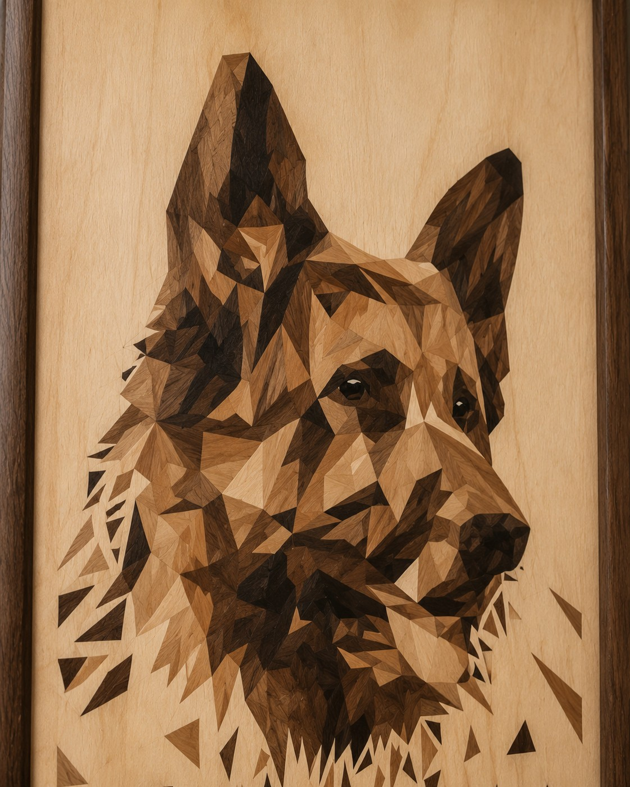

Your Companion, Rendered in Wood
A portrait of your dog, cat or horse, built by hand from natural wood veneers: the direction of the fur in the grain, the colour of the coat in the species, the look in the eyes cut with a knife.
Why wood suits animals so well
Animals are made of texture and direction: the way fur lies along the muzzle, gathers at the neck, catches the light across the back. Wood is made of the same things. In marquetry, the grain of every piece can be turned to follow the form it describes, so a coat seems to flow in the way it does in life.
The palette helps too. The natural browns, creams, golds and near-blacks of walnut, oak, maple, ash and wenge sit remarkably close to the colours of real coats. Nothing is painted: the tan of a German Shepherd or the cream of a Labrador is simply the right wood, chosen and cut to shape.
We regularly create portraits of pets, from a single faithful dog to several animals together. Many are commissioned as gifts; many in memory of a companion who is no longer here. Each is cut freehand by the artist, Sasun Sargsyan, in his studio near Pisa.
More Than a Picture of a Pet
A Likeness, Not a Filter
The portrait is composed by hand from your photographs, so it captures the expression you know rather than a generic breed.
Your Choice of Character
From crisp geometric facets, as in our German Shepherd, to a more painterly, naturalistic cut. We will suggest a direction in your preview.
Made to Outlast Us
Natural wood, a protective finish and a frame: a portrait meant to be handed down, not replaced.
One of One
Every portrait is cut by hand and signed, with a numbered Certificate of Authenticity.

Geometric German Shepherd
Cut from 125 pieces of natural veneer and set into a pale ground, this portrait reduces a German Shepherd to its essential planes: the dark saddle, the tan of the muzzle, the alert ears. It shows how a few well-chosen woods can carry an animal’s character.
Your commission can follow this geometric language or take a more detailed, naturalistic approach with several hundred pieces. Animals are a constant subject in the studio’s work, from the Lion Within to the Eagle and the Tiger.
How to photograph your pet for a portrait
Animals rarely sit still for the perfect picture, so send several. A good portrait photograph usually has:
- The camera at eye level. Crouch down to their height rather than shooting from above.
- Sharp eyes with a catch-light. A small reflection of daylight in the eyes brings the portrait to life.
- Soft, natural light. Outdoors in open shade, or beside a bright window. Avoid flash.
- The true colour of the coat. Markings, a white blaze, a greying muzzle: these details make the portrait theirs.
If your companion has passed away, send the photographs you have, even if none is perfect. Several images of the same animal often give us what a single one cannot.
Three Scales of Commission
Each portrait is quoted personally, according to its scale and the number of pieces cut by hand to realise it.
Intimate
Approx. 300–400 hand-cut pieces
A single subject in a smaller format: a thoughtful gift or personal keepsake.
A personal keepsake
Signature
Approx. 500–700 hand-cut pieces
Our most-chosen size: generous detail, suited to a focal wall.
A focal work
Masterwork
800+ hand-cut pieces
Multi-subject compositions, or portraits of exceptional scale and detail.
Of exceptional scale
From Photograph to Portrait
Share Your Photograph
Send one to five photos through the portrait form. Tell us the occasion and, if there is one, the date you need it by.
Receive Your Private Preview
Within 24 hours we send a composed preview of how your portrait will be built in wood, together with your quotation. Complimentary, and without obligation.
Approve or Refine
One round of revision is included. Nothing is cut until you are genuinely happy with the composition.
Secure Your Commission
A 50% deposit reserves your place in the studio calendar. The balance is due before shipping.
Cut by Hand, Piece by Piece
Typically three to six weeks of concentrated work, with photo and video updates at key milestones.
Delivered, Signed and Certified
Crated, tracked and insured to anywhere in the world, with a signed, numbered Certificate of Authenticity.
Frequently Asked
Dogs and cats most often, but also horses and other animals. If you can photograph them clearly, we can very likely cut them in wood.
Yes. Two or more animals, or a pet together with its person, are composed as multi-subject portraits, usually at Masterwork scale. We will advise in your preview.
Yes, and it is one of the most meaningful commissions we make. Send the photographs you have; your preview will show what they allow.
Most portraits take three to six weeks from deposit to delivery, depending on scale and complexity.
Yes. Every portrait is carefully crated and shipped worldwide, fully tracked and insured.
Further Reading

What Is Marquetry? A Short Guide to Pictures Made of Wood
Where the craft comes from, how it differs from inlay, intarsia and parquetry, and how a portrait is built from veneer.

Hand-Cut Marquetry or Laser-Cut Wood Art? How to Tell the Difference
Charred edges, printed grain, a single board: what to look for, and the questions to ask before you commission.

Caring for a Marquetry Artwork
Light, humidity, cleaning and hanging: the few simple habits that keep a work in wood beautiful for generations.
A Portrait as Loyal as They Are
Send a few photographs of your companion and receive a private preview, prepared within 24 hours.
Begin Your Pet’s Portrait